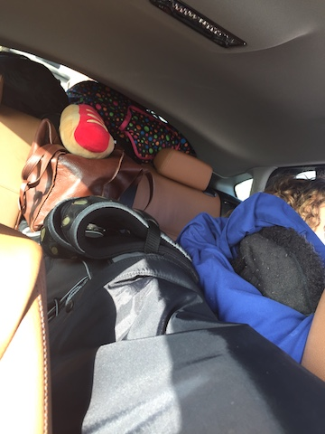
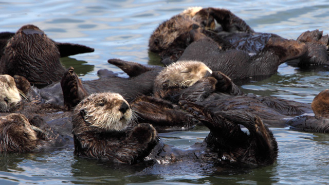

Over winter break me and my family drove down to Palm Desert. Me, my cousins and my aunt and uncle and my grandparents rented a house there that we shared for 5 days. Here is a picture of us in the car, on the way down to Palm Desert. 
While in Palm Desert we mostly just hung out. But, we also went out to dinner a lot, played games and went to the pool/spa. For New Years Eve and New Years Day, we went to Monterey and went to the Monterey Bay Aquarium and saw the otters and animals. We also stayed in a hotel for the night. 
After New Years we finally went home. And for the majority of the time, we hung out and relaxed. I watched a lot of Netflix and mostly slept in until noon.
And that is it! That is an overview of my winter break; I went to Palm Desert, Monterey, the aquarium, and watched a LOT of Netflix.